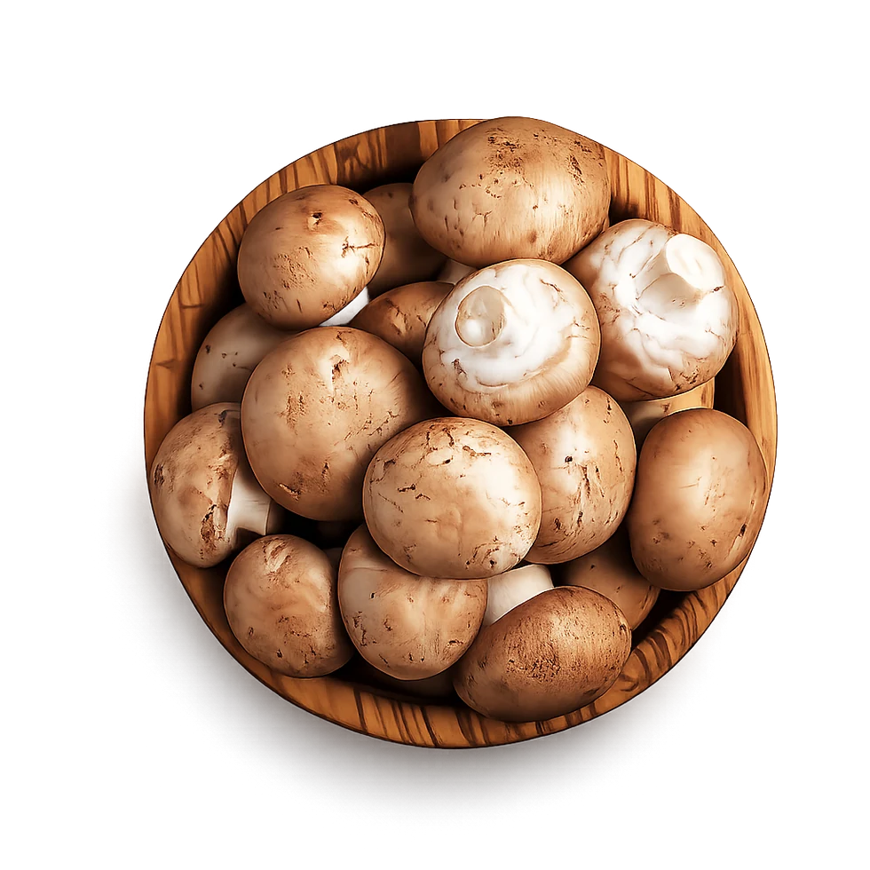

Termesztés
Friss gombák
Fehér és barna csiperke, portobello, laskagomba, shiitake, ördögszekér és shimeji. Közép-Európa egyik legnagyobb termesztő felületén, saját komposzton, egész évben.
7 fajtaEgész évbenNapi kiszállítás
Friss gomba terméklista →